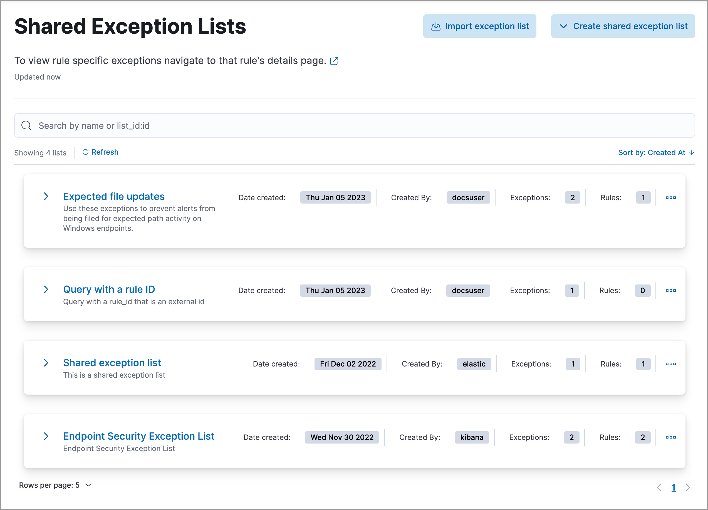
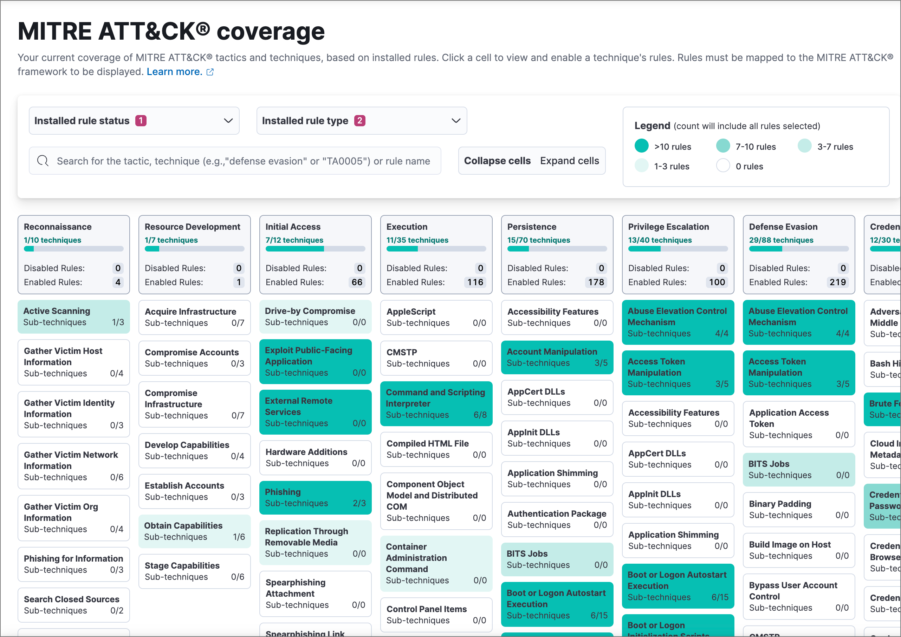

Elastic Security UI
editElastic Security UI
editThe Elastic Security app is a highly interactive workspace designed for security analysts that provides a clear overview of events and alerts from your environment. You can use the interactive UI to drill down into areas of interest.
Search
editFilter for alerts, events, processes, and other important security data by entering Kibana Query Language (KQL) queries in the search bar, which appears at the top of each page throughout the app. A date/time filter set to Today is enabled by default, but can be changed to any time range.
-
To refine your search results, select Add Filter (), then enter the field, operator (such as
is notoris between), and value for your filter. - To save the current KQL query and any applied filters, select Saved query menu (), enter a name for the saved query, and select Save saved query.
Navigation menu
editThe navigation menu contains direct links and expandable groups, identified by the group icon ().
- Click a top-level link to go directly to its landing page, which contains links and information for related pages.
- Click a group’s icon () to open its flyout menu, which displays links to related pages within that group. Click a link in the flyout to navigate to its landing page.
- Click the Collapse side navigation icon () to collapse and expand the main navigation menu.
Visualization actions
editMany Elastic Security histograms, graphs, and tables display an Inspect button () when you hover over them. Click to examine the Elasticsearch queries used to retrieve data throughout the app.
Other visualizations display an options menu ( ), which allows you to inspect the visualization’s queries, add it to a new or existing case, or open it in Lens for customization.
), which allows you to inspect the visualization’s queries, add it to a new or existing case, or open it in Lens for customization.

Inline actions for fields and values
editThroughout the Elastic Security app, you can hover over many data fields and values to display inline actions, which allow you to customize your view or investigate further based on that field or value.

In some visualizations, these actions are available in the legend by clicking a value’s options icon ().

Inline actions include the following (some actions are unavailable in some contexts):
- Filter In: Add a filter that includes the selected value.
- Filter Out: Add a filter that excludes the selected value.
- Add to timeline: Add a filter to Timeline for the selected value.
- Toggle column in table: Add or remove the selected field as a column in the alerts or events table. (This action is only available on an alert’s or event’s details flyout.)
- Show top x: Display a pop-up window that shows the selected field’s top events or detection alerts.
- Copy to Clipboard: Copy the selected field-value pair to paste elsewhere.
Elastic Security app pages
editThe Elastic Security app contains the following pages that enable analysts to view, analyze, and manage security data.
Dashboards
editExpand this section to access the Overview, Detection & Response, Kubernetes, Cloud Security Posture, Cloud Native Vulnerability Management, Entity Analytics, and Data Quality dashboards, which provide interactive visualizations that summarize your data. You can also create and view custom dashboards. Refer to Dashboards for more information.

Rules
editExpand this section to access the following pages:
-
Rules: Create and manage rules to monitor suspicious events.

-
Benchmarks: View, set up, or configure cloud security benchmarks.

-
Shared Exception Lists: View and manage rule exceptions and shared exception lists.
 -
MITRE ATT&CK® coverage: Review your coverage of MITRE ATT&CK® tactics and techniques, based on installed rules.

Alerts
editView and manage alerts to monitor activity within your network. Refer to Detections and alerts for more information.

Findings
editIdentify misconfigurations and vulnerabilities in your cloud infrastructure. For setup instructions, refer to Cloud Security Posture Management, Kubernetes Security Posture Management, or Cloud Native Vulnerability Management.

Cases
editOpen and track security issues. Refer to Cases to learn more.

Timelines
editInvestigate alerts and complex threats — such as lateral movement — in your network. Timelines are interactive and allow you to share your findings with other team members. Refer to Timeline to learn more.

Click the Timeline button at the bottom of the Elastic Security app to start an investigation.
Intelligence
editThe Intelligence section contains the Indicators page, which collects data from enabled threat intelligence feeds and provides a centralized view of indicators of compromise (IoCs). Refer to Indicators of compromise to learn more.

Explore
editExpand this section to access the following pages:
-
Hosts: Examine key metrics for host-related security events using graphs, charts, and interactive data tables.
-
Network: Explore the interactive map to discover key network activity metrics and investigate network events further in Timeline.

-
Users: Access a comprehensive overview of user data to help you understand authentication and user behavior within your environment.

Get started
editQuickly add security integrations that can ingest data and monitor your hosts.
Manage
editExpand this section to access and manage additional security features:
- Entity risk score: Manage entity risk scoring, and preview risky entities.
- Endpoints: View and manage hosts running Elastic Defend.
- Policies: View and manage Elastic Defend integration policies.
- Trusted applications: View and manage trusted Windows, macOS, and Linux applications.
- Event filters: View and manage event filters, which allow you to filter endpoint events you don’t need to want stored in Elasticsearch.
- Host isolation exceptions: View and manage host isolation exceptions, which specify IP addresses that can communicate with your hosts even when those hosts are blocked from your network.
- Blocklist: View and manage the blocklist, which allows you to prevent specified applications from running on hosts, extending the list of processes that Elastic Defend considers malicious.
- Response actions history: Find the history of response actions performed on hosts.
- Container Workload Protection: Identify and block unexpected system behavior in Kubernetes containers.
Accessibility features
editAccessibility features, such as keyboard focus and screen reader support, are built into the Elastic Security UI. These features offer additional ways to navigate the UI and interact with the application.
Interact with draggable elements
editUse your keyboard to interact with draggable elements in the Elastic Security UI:
-
Press the
Tabkey to apply keyboard focus to an element within a table. Or, use your mouse to click on an element and apply keyboard focus to it.

-
Press
Enteron an element with keyboard focus to display its menu and pressTabto apply focus sequentially to menu options. Thef,o,a,t,chotkeys are automatically enabled during this process and offer an alternative way to interact with menu options.
- Press the spacebar once to begin dragging an element to a different location and press it a second time to drop it. Use the directional arrows to move the element around the UI.

-
If an event has an event renderer, press the
Shiftkey and the down directional arrow to apply keyboard focus to the event renderer andTaborShift+Tabto navigate between fields. To return to the cells in the current row, press the up directional arrow. To move to the next row, press the down directional arrow.

Navigate the Elastic Security UI
editUse your keyboard to navigate through rows, columns, and menu options in the Elastic Security UI:
- Use the directional arrows to move keyboard focus right, left, up, and down in a table.

-
Press the
Tabkey to navigate through a table cell with multiple elements, such as buttons, field names, and menus. Pressing theTabkey will sequentially apply keyboard focus to each element in the table cell.

-
Use
CTRL + Hometo shift keyboard focus to the first cell in a row. Likewise, useCTRL + Endto move keyboard focus to the last cell in the row.
-
Use the
Page UpandPage Downkeys to scroll through the page.